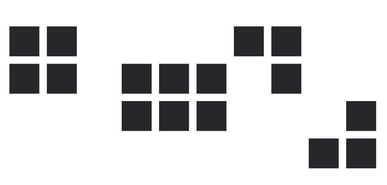

A segregação da bola se dá pela sua própria forma, já entre os jogadores, além de sua constituição humana, podemos segregá-los pelas cores de seus uniformes, por exemplo.
Em análise mais profunda, cada uma dessas unidades pode ser segregada em mais unidades, como os hexágonos da bola.
A aplicação dessas leis ajuda a compor imagens mais fáceis de serem lidas ou interpretadas, que é o objetivo final da Gestalt.
Algumas técnicas visuais ajudam a usar as leis de forma mais consciente, como, por exemplo, o contraste de cores, assimetria e simetria, harmonia e desarmonia, entre outros.
O importante é ter em mente que a leitura visual passa por essas leis ao tentar compreender os estímulos visuais e assim fazer escolhas ou tomar decisões.
Exemplos:
1. Semelhança
A lei da semelhança dita que objetos similares se agruparão entre si. Na imagem abaixo, a maioria das pessoas enxergam colunas de quadrados e colunas de círculos. De tal forma que poucas pessoas vão associar isto como uma linha horizontal onde quadrados e círculos se intercalam.

2. Proximidade
Na lei da Proximidade, os elementos próximos tendem a se agrupar, constituindo uma unidade. Estes elementos vão parecer mais próximos e unificados quanto menor for a distância entre eles. Você nota os 16 quadrados, ou os 4 grupos de quadrados na imagem abaixo?

3. Continuidade
A Continuidade é a Lei da Gestalt a respeito da fluidez de uma composição. Se os elementos de uma composição conseguem ter uma harmonia do início ao fim, sem interrupções, podemos dizer que ele possui uma boa continuidade.
4. Pregnância
A lei da Pregnância é também chamada de lei da simplicidade. Ou seja, ela dita que objetos em um ambiente são vistos da forma mais simples possível. Desta forma, quanto mais simples, mais facilmente é assimilada. Como exemplo na imagem abaixo, vemos vários círculos em vez de uma forma complexa:
5. Fechamento
O Fechamento é a Lei da Gestalt que faz com que nosso cérebro produza contornos que não existem. Por isso chamamos de Fechamento Sensorial da forma. Dessa forma, os elementos são agrupados se eles parecem se completar. Ou seja, nossa mente ver um objeto completo mesmo quando não há um.

6. Unidade
Na lei da unidade, mesmo uma imagem abstrata pode ser entendida pela mente humana. Pois preenchemos os espaços vazios instintivamente, como por exemplo no logotipo da WWF e do Johnnie Walker. Ou seja, um homem caminhando e um urso panda.
Sobretudo, a lei da unidade é essencial na criação, pois se faz presente na organização e disposição de elementos. Dessa forma permite composições originais e criativas a partir de unidades já existentes.
7. Unificação
Na lei da unificação, um objeto formado por várias unidades pode ser harmoniosamente simétrico ou não. Isso ocorre quando temos um peso igual de pregnância, proximidade, unidade e semelhança entre objetos de um mesmo composto. Então podemos dizer que há uma unificação perfeita.
A unificação pode ser definida pela igualdade ou equilíbrio de estímulos em todos os elementos de uma determinada composição. Um exemplo comum de unificação são as mandalas. Elas usam em equilíbrio os princípios da semelhança e proximidade para criar composições simétricas e agradáveis.
8. Segregação
A lei da segregação trata sobre da capacidade que nosso cérebro tem de diferenciar ou evidenciar objetos, ainda que sobrepostos. Isso se deve à variação de forma e estética que um elemento tem em comparação com outro. Desse modo, os estímulos visuais de cada unidade também são diferentes.
A segregação ocorre de várias maneiras: pontos, linhas, planos, volumes, sombras, brilhos, texturas, relevos, entre outras formas.